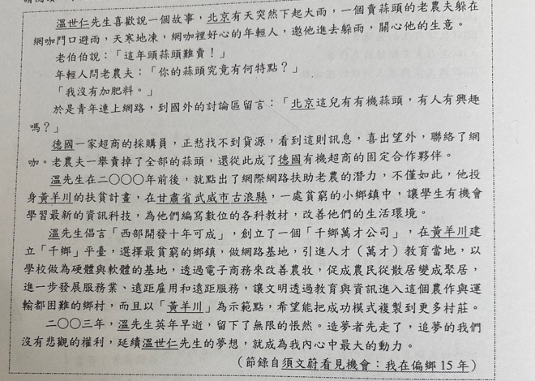
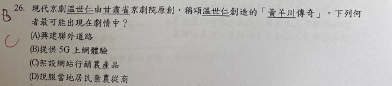

分享原卷｜第26題
完整原題
作答所需文章／材料
溫世仁先生喜歡說一個故事，北京有天突然下起大雨，一個賣蒜頭的老農夫躲在網咖門口避雨，天寒地凍，網咖裡好心的年輕人，邀他進去躲雨，關心他的生意。 老伯伯說：「這年頭蒜頭難賣！」 年輕人問老農夫：「你的蒜頭究竟有何特點？」 「我沒有加肥料。」 於是青年連上網路，到國外的討論區留言：「北京這兒有有機蒜頭，有人有興趣嗎？」 德國一家超商的採購員，正愁找不到貨源，看到這則訊息，喜出望外，聯絡了網咖。老農夫一舉賣掉了全部的蒜頭，還從此成了德國有機超商的固定合作夥伴。 溫先生在二○○○年前後，就點出了網際網路扶助老農的潛力，不僅如此，他投身黃羊川的扶貧計畫，在甘肅省武威市古浪縣，一處貧窮的小鄉鎮中，讓學生有機會學習最新的資訊科技，為他們編寫數位的各科教材，改善他們的生活環境。 溫先生倡言「西部開發十年可成」，創立了一個「千鄉萬才公司」，在黃羊川建立「千鄉」平臺，選擇最貧窮的鄉鎮，做網路基地，引進人才（萬才）教育當地，以學校做為硬體與軟體的基地，透過電子商務來改善農牧，促成農民從散居變成聚居，進一步發展服務業、遠距雇用和遠距服務，讓文明透過教育與資訊進入這個農作與運輸都困難的鄉村，而且以「黃羊川」為示範點，希望能把成功模式複製到更多村莊。 二○○三年，溫先生英年早逝，留下了無限的悵然。造夢者先走了，追夢的我們沒有悲觀的權利，延續溫世仁先生的夢想，就成為我內心中最大的動力。 （節錄自須文蔚〈看見機會：我在偏鄉15年〉）現代京劇《溫世仁》由甘肅省京劇院原創，稱頌溫世仁創造的「黃羊川傳奇」，下列何者最可能出現在劇情中？
(A) 興建聯外道路
(B) 提供5G上網體驗
(C) 架設網站行銷農產品
(D) 說服當地居民棄農從商
先想一想，再查看答案、解說與原圖
原卷作答：B，原卷紅筆訂正C
正確答案：C。透過網站與電子商務讓農產品接觸外地買家，直接呼應蒜頭故事及「透過電子商務來改善農牧」。
逐項解析
| 選項與原句 | 判讀 | 句意與判斷理由 |
|---|---|---|
| (A) 興建聯外道路 | 不選 | 文章指出農作與運輸困難，但所述計畫著重教育、資訊與電子商務，沒有把興建道路列為核心做法。 |
| (B) 提供5G上網體驗 | 不選 | 本文寫二○○○年前後的計畫及二○○三年逝世；5G上網體驗不合這段故事的時代與內容。 |
| (C) 架設網站行銷農產品 | 應選 | 透過網站與電子商務讓農產品接觸外地買家，直接呼應蒜頭故事及「透過電子商務來改善農牧」。 |
| (D) 說服當地居民棄農從商 | 不選 | 計畫要利用資訊改善農牧、發展服務，不是要求居民放棄農業。 |
詳細說明與解題步驟
先抓「資訊科技」「數位教材」「電子商務來改善農牧」三個線索。開頭網路幫老農賣蒜頭，正是網站行銷農產品的例子，故C最可能寫入戲劇。不要因看到偏鄉困境，就把文中未寫的工程計畫或新時代通訊技術加進故事。
【A】文章指出農作與運輸困難，但所述計畫著重教育、資訊與電子商務，沒有把興建道路列為核心做法。
【B】本文寫二○○○年前後的計畫及二○○三年逝世；5G上網體驗不合這段故事的時代與內容。
【C】透過網站與電子商務讓農產品接觸外地買家，直接呼應蒜頭故事及「透過電子商務來改善農牧」。
【D】計畫要利用資訊改善農牧、發展服務，不是要求居民放棄農業。
核對註記：已實看原卷並核對題幹、全部選項與必要文章；未確認課本對應課次，歸綜合。
原圖（僅本題）

